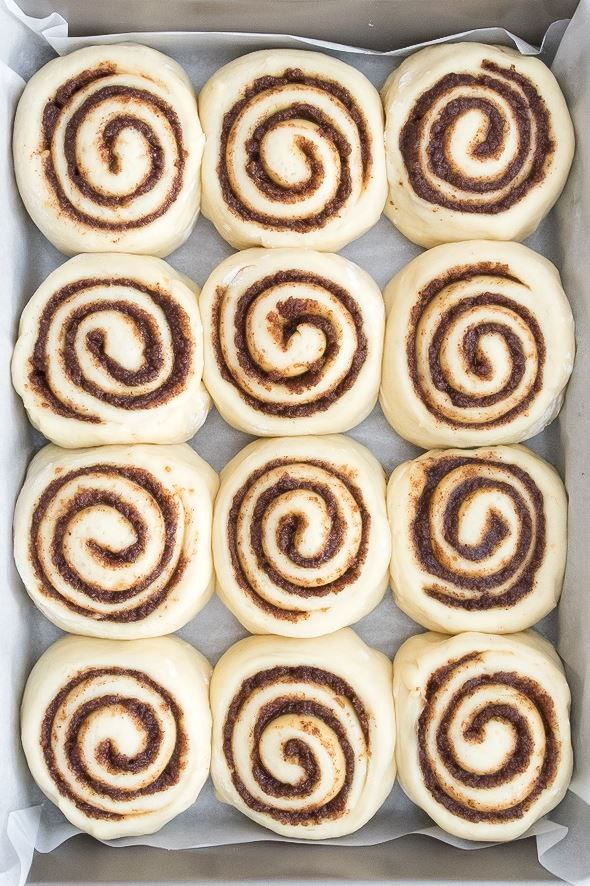
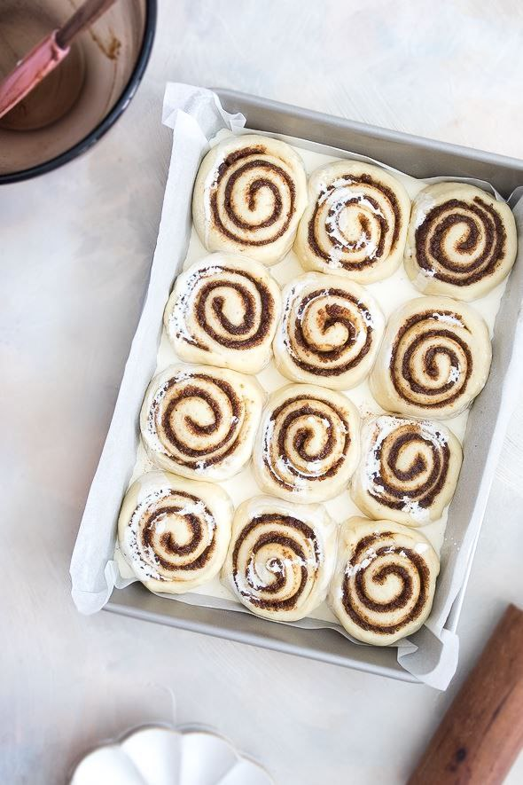
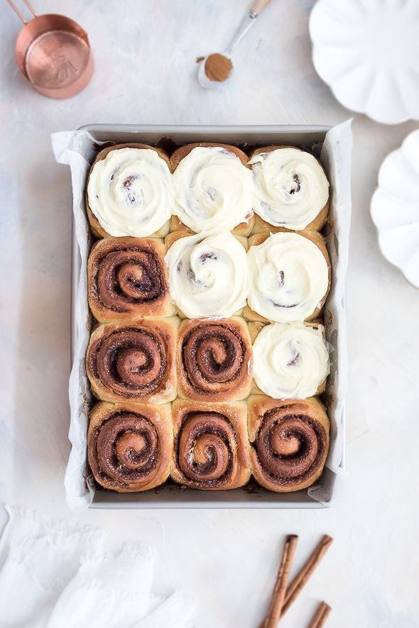
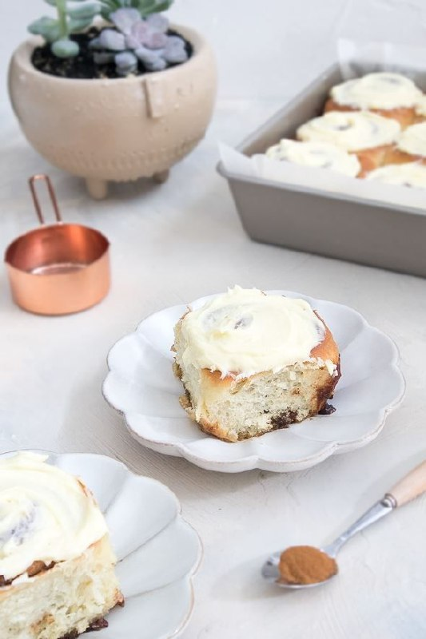

Robel's Cinnamon Roll Recipe
Ingredients
For the dough:
- ¾ cup warm milk
- 2 ¼ teaspoons yeast
- ¼ cup granulated sugar
- 1 egg plus 1 egg yolk
- ¼ cup butter
- 3 cups bread flour
- 2/3 cup dark brown sugar
- 1 ½ tablespoons ground cinnamon
- ¼ cup butter
For the filling:
Instructions
- Mix the milk with the yeast, sugar, eggs.
- Melt the butter and add to the mixture.
- Add in the flour and mix until combined into a dough.
- Knead the dough for 10 minuites.
- Transfer the dough into a large bowl and cover with plastic wrap. Leave it somewhere to rise for 2 hours.
- After the dough has doubled in size, roll it out into a large rectangle.
- Melt the butter for the filling and mix in the sugar and cinnamon.
- Spread the filling onto the dough then roll the dough into a swiss roll.
- Cut the roll into 3cm sections and place flat into a baking tray.
- Pre-heat the oven to 350F or 180C, then bake the rolls for 20-25min until lightly brown.
Gallery
Take a look at some of our Cinnamon Roll.!




×